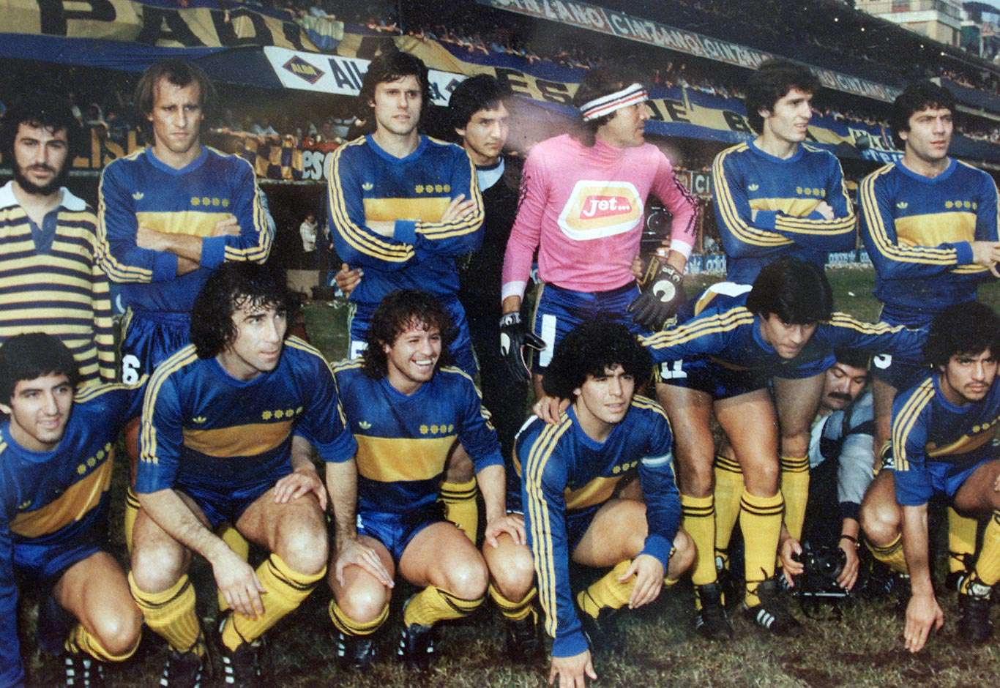
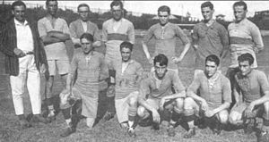
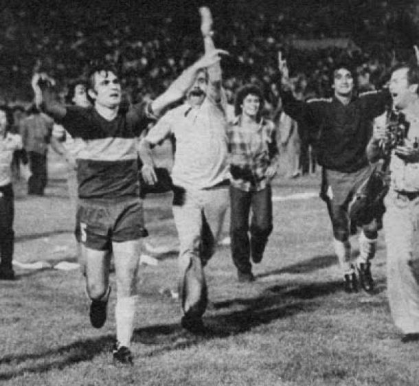
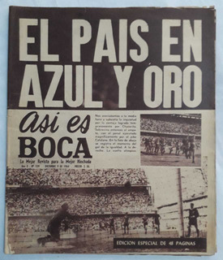

LA PAGINA OFICIAL DE BOCA EL MAS GRANDE DE TODOS, CAMPEON DE CAMPEONES, CLUB DE CLUBES, ETC...!!!!!
historia de BOCA:
El Club Atlético Boca Juniors es una entidad deportiva argentina con sede en el barrio de La Boca, Buenos Aires.
Fue fundado el 3 de abril de 1905 por seis vecinos adolescentes hijos de italianos. Boca Juniors participa de la
Primera División Argentina desde 1913assetsipo juega sus partidos como local en el estadio Alberto J. Armando,
conocido mundialmente como «La Bombonera»; allí también ha sido localista en numerosas ocasiones la Selección
Argentina de fútbol, donde mantiene un invicto histórico en partidos oficiales.
Es considerado uno de los denominados cinco grandes del fútbol argentino, a partir de que la AFA dispusiera la
implementación del llamado «voto proporcional» en 1937, que consistía en darle mayor poder de decisión a
aquellos clubes con mayor número de socios, mayor antigüedad y mayor cantidad de títulos.
titulos de BOCA:
torneos locales:
- Campeonato de Primera División: 1919, 1920, 1923, 1924, 1926, 1930, 1931, 1934, 1935, 1940, 1943, 1944,
1954, 1962, 1964 y 1965.
- Torneo Metropolitano: 1976 y 1981.
- Torneo Nacional: 1969, 1970 y 19676.
- Torneo Apertura: 1992 y 1998.
- Torneo Clausura: 1999
copas nacionales:
- Copa Carlos Ibarguren: 1919, 1923, 1924, 1940 y 1944.
- Campeón de Honor: 1925.
- Copa Competencia: 1925.
- Copa Estímulo: 1926.
- Copa Competencia Británica: 1946.
- Copa Argentina: 1969.
torneos internacionales de conmebol:
- Copa Libertadores: 1977y 1978.
- Copa Intercontinental: 1977.
- Copa Master: 1992.
- Copa de Oro: 1993.
- Supercopa: 1989.
- Recopa Sudamericana: 1990.
copas internacionales organizadas por AFA/AUF:
- Copa Competencia: 1919.
- Copa de Honor Cousenier: 1920.
- Copa Confraternidad Escobar Gernoa: 1945 y 1946.
3 razones por la que BOCA es el mas grande:
- EL DIEGO ES DE BOCA!!!!
- somos la mitad + 1
- la bombonera es el mejor estadio del mundo
imagenes de BOCA:




